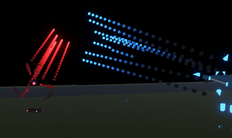
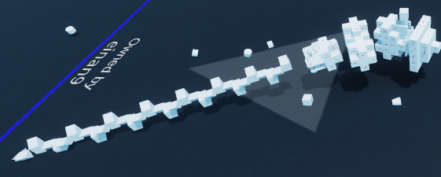

Overview of Blades
Blades are what makes a shredder a shredder, that is why this page is important. Blades have a few factors for being good, mainly Spacing and CE. This page has information on many things related to blades.
Blade Design
Blade design is the general design of a shredders blade, the pattern and logic. This will show the 3 main types of blade designs that were made and also some principles of blade design.
Modern Spaced CS

This type of blade came from the change making compressor blocks invincible, using its max compression setting to make a long and wide spaced blade. this is the best type of blade for now. It is decently immune to pingspikes, spaced well, covers alot of area, block efficient, and deals high damage.
There are a few variants, most simply cut down the sides of the blade shape from four to three or two. Two sides, flat blades, are considered to not actually cover as much area and also require a lot of speed to actually rotate properly.(30pi).
Sinusoid

This blade uses a repeated pattern of angles to create a spinning sinusoid. These are spaced well, having a very efficient use of cutters. However, spaced cs is typically much better.
A mistake people make when using this type of blade is creating a helix, stacking the pattern to make two sinusoids. This uses way too many blocks and can make the blade dense enough to be pingspiked.
Old CS (deprecated)

This was the main type of blade from early forks, up until sinusoids. Before compression it would simply snap in half from damage. It was used on ogs and gyros, and was upgraded to cover more area by being slightly spaced when compression was added.
Zippering
Zippering is when you use the drag tool to create welds with an angle block while also bringing the welded pieces to wherever the angle lock is last placed. When used right, it can save many blocks.
Balancing Stats
Balancing your shredder is necessary when working with limited blocks. For example, if you put everything into speed and not armor, if you add armor you will be too laggy.
Blade Design
Blade design can help with optimisation, as its something that uses a lot of blocks. Try keeping your blade to a maximum of 80 blocks, and spacing out your cutters to be more efficiently used. This has more benefits than just optimisation too, which can be seen in blade design.